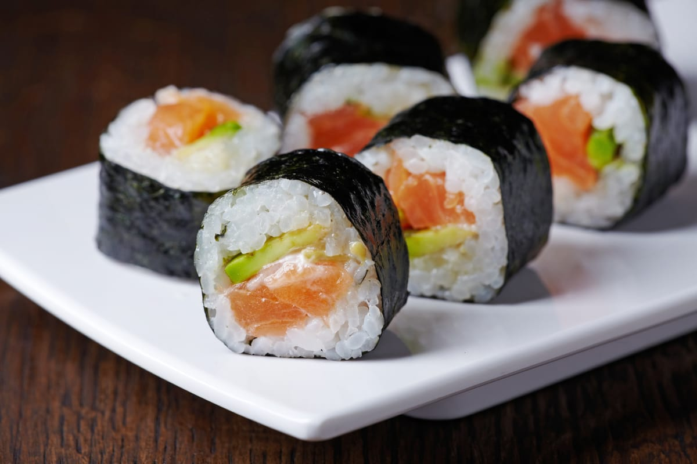

sushi

California rolls
a Japanese dish consisting of vinegared rice, often topped with or rolled around raw or cooked seafood, vegetables, or eggs, and is known for its variety of styles and flavors.
Ingridients
steps
- Rinse sushi rice until the water runs clear, then cook and season with rice vinegar, sugar, and salt.
- Lay a sheet of nori on a bamboo mat, shiny side down.
- Serve with soy sauce, pickled ginger, and wasabi.
home